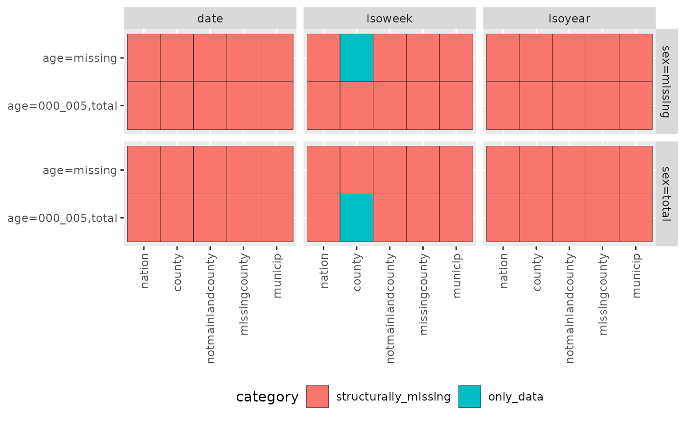

Data format (splfmt_rts_data_v1)
Richard Aubrey White
2022-04-20
Source:../vignettes/splfmt_rts_data_v1.Rmd
splfmt_rts_data_v1.Rmdsplfmt_rts_data_v1
This document presents the data format splfmt_rts_data_v1.
splfmt_rts_data_v1 is the data format that the Sykdomspulsen team recommends using for the real-time surveillance of infectious diseases.
Style
Language
English is the primary language for our code.
Names that are abbreviations or in Norwegian are kept as they are: data sources such as msis, daar, sysvak, normomo.
Capital letters
Capital letters are to be avoided whenever possible. This is also the case in filenames (e.g. data.rds is preferred to data.RDS)
snake_case or camelCase?
Use snake_case.
Timestamping of file names
In results (e.g. reports), an indicator of time when the files are created are necessary. It allows us to find which one is the most recent version of files with the same names, and it allows easy tracking of an Airflow error.
e.g. Epidemiologisk_situasjonsrapport_2021-05-31_0659.docx for a report generated on May 31, 2021 06:59 AM.
Ordering of variables
Sometimes variables need to be ordered. Variables should be ordered as follows:
- time
- location
- age
- sex
e.g. A database table could be called msis_by_time_location_age_sex or a filename could be called 2020_oslo_05-10_male.xlsx
Time
Time functions can be obtained from spltime. Missing time data should be coded as NA. Uncommon/internal use is demarcated by a line through the text.
| Valid times in the splverse format | |||
|---|---|---|---|
| Time (Granularity) | Class | Function | Example(s) |
| day | Date | as.Date | 2021-12-31 |
| isoweek (numeric)1 | numeric | spltime::isoweek_n | 1 |
| isoweek (character)2 | character | spltime::isoweek_c | "01" |
| isoyear (numeric)3 | character | spltime::isoyear_n | 2021 |
| isoyear (character)4 | character | spltime::isoyear_c | "2021" |
| isoyearweek | character | spltime::isoyearweek_c | "2021-01" |
| event_*_date1_to_date25 | character | as.character | "event_covid19_norway_vaccination_2020_12_02_to_9999_09_09", "event_covid19_norway_2020_02_21_to_9999_09_09" |
| 1 isoweek (numeric) is used when it is a standalone variable. | |||
| 2 isoweek (character) is only used internally within isoyearweek. Internal use is demarcated by a line through the text. | |||
| 3 isoyear (numeric) is used when it is a standalone variable. | |||
| 4 isoyear (character) is only used internally within isoyearweek. Internal use is demarcated by a line through the text. | |||
| 5 If the event is ongoing, then the 'to' date should be 9999_09_09. | |||
Location
Locations can be obtained from spldata. Valid locations (and location types) are available in spldata::nor_locations_names(). Uncommon/internal use is demarcated by a line through the text.
| Valid locations and location types in the splverse format | ||||||
|---|---|---|---|---|---|---|
| Geo (Granularity) | N | Examples | ||||
| location_code1 | location_name2 | location_name_description_nb3 | location_name_file_nb_utf4 | location_name_file_nb_ascii5 | ||
| nation | 1 | norge | Norge | Norge | Norge | Norge |
| county | 11 | county42 | Agder | Agder (fylke) | Agder_fylke | Agder_fylke |
| notmainlandcounty | 2 | notmainlandcounty22 | Utenfor fastlands-Norge (Jan Mayen) | Utenfor fastlands-Norge (Jan Mayen) (fylke) | Utenfor_fastlands-Norge_Jan_Mayen_fylke | Utenfor_fastlands-Norge_Jan_Mayen_fylke |
| missingcounty | 1 | missingcounty99 | Ukjent fylke | Ukjent fylke (fylke) | Ukjent_fylke_fylke | Ukjent_fylke_fylke |
| municip | 356 | municip1820 | Alstahaug | Alstahaug (kommune i Nordland) | Alstahaug_kommune_i_Nordland | Alstahaug_kommune_i_Nordland |
| notmainlandmunicip | 2 | notmainlandmunicip2200 | Jan Mayen | Jan Mayen (kommune i Utenfor fastlands-Norge (Jan Mayen)) | Jan_Mayen_kommune_i_Utenfor_fastlands-Norge_Jan_Mayen | Jan_Mayen_kommune_i_Utenfor_fastlands-Norge_Jan_Mayen |
| missingmunicip | 1 | missingmunicip9999 | Ukjent kommune | Ukjent kommune (kommune i Ukjent fylke) | Ukjent_kommune_kommune_i_Ukjent_fylke | Ukjent_kommune_kommune_i_Ukjent_fylke |
| wardoslo | 15 | wardoslo030112 | Alna | Alna (bydel i Oslo) | Alna_bydel_i_Oslo | Alna_bydel_i_Oslo |
| wardbergen | 8 | wardbergen460101 | Arna | Arna (bydel i Bergen) | Arna_bydel_i_Bergen | Arna_bydel_i_Bergen |
| wardstavanger | 9 | wardstavanger110303 | Eiganes og Våland | Eiganes og Våland (bydel i Stavanger) | Eiganes_og_Våland_bydel_i_Stavanger | Eiganes_og_Valand_bydel_i_Stavanger |
| wardtrondheim | 4 | wardtrondheim500104 | Heimdal | Heimdal (bydel i Trondheim) | Heimdal_bydel_i_Trondheim | Heimdal_bydel_i_Trondheim |
| extrawardoslo | 2 | extrawardoslo030117 | Marka | Marka (bydel i Oslo) | Marka_bydel_i_Oslo | Marka_bydel_i_Oslo |
| missingwardbergen | 1 | missingwardbergen460199 | Ukjent bydel i Bergen | Ukjent bydel i Bergen (bydel i Bergen) | Ukjent_bydel_i_Bergen_bydel_i_Bergen | Ukjent_bydel_i_Bergen_bydel_i_Bergen |
| missingwardoslo | 1 | missingwardoslo030199 | Ukjent bydel i Oslo | Ukjent bydel i Oslo (bydel i Oslo) | Ukjent_bydel_i_Oslo_bydel_i_Oslo | Ukjent_bydel_i_Oslo_bydel_i_Oslo |
| missingwardstavanger | 1 | missingwardstavanger110399 | Ukjent bydel i Stavanger | Ukjent bydel i Stavanger (bydel i Stavanger) | Ukjent_bydel_i_Stavanger_bydel_i_Stavanger | Ukjent_bydel_i_Stavanger_bydel_i_Stavanger |
| missingwardtrondheim | 1 | missingwardtrondheim500199 | Ukjent bydel i Trondheim | Ukjent bydel i Trondheim (bydel i Trondheim) | Ukjent_bydel_i_Trondheim_bydel_i_Trondheim | Ukjent_bydel_i_Trondheim_bydel_i_Trondheim |
| baregion6 | 159 | baregion111 | Alstahaug | Alstahaug (BA-region) | Alstahaug_BA-region | Alstahaug_BA-region |
| region | 5 | region2 | Midt-Norge | Midt-Norge (region) | Midt-Norge_region | Midt-Norge_region |
| faregion7 | 5 | faregion4 | Midt | Midt (Mattilsynet-region) | Midt_Mattilsynet-region | Midt_Mattilsynet-region |
| lab | 26 | lab000030 | Akershus Universitetssykehus | Akershus Universitetssykehus (lab) | Akershus_Universitetssykehus_lab | Akershus_Universitetssykehus_lab |
| 1location_code: Used a) inside datasets and b) in data file names for transfer of data/results between analytic systems. All values are unique. | ||||||
| 2location_name: Used (rarely) inside results (figures, tables, documents). Can be confusing as some names are duplicated. Its rare usage is demarcated by a line through the text. | ||||||
| 3location_name_description_nb: Used (frequently) inside results (figures, tables, documents). All values are unique. | ||||||
| 4location_name_file_nb_utf: Used (frequently) in the file names for results (figures, tables, documents). All values are unique. | ||||||
| 5location_name_file_nb_ascii: Used (rarely) in the file names for results (figures, tables, documents). Used if file systems have problems with the Norwegian letters æøå. All values are unique. | ||||||
| 6 Bo- og arbeidsmarkedsregioner. Housing and labor market regions. | ||||||
| 7 Mattilsynet-regioner. Food authority regions. | ||||||
Ages
Ages should be coded as characters and should always contain 3 digits. If it is an age range, the two ages are joined by an underscore (e.g. 005_010).
Use 085p instead of >=085 or 85+, as this will allow for an easy conversion from long to wide formatted data.
| Valid ages in the splverse format | ||
|---|---|---|
| Value | class | Definition |
| "000" | character | One year age group (0 year olds) |
| "079" | character | One year age group(79 year olds) |
| "000_004" | character | Age span of 0-4 year olds |
| "065p" | character | Age span of >=65 year olds |
| "missing" | character | Missing/unknown |
| "total" | character | Everyone |
This format will help your data be easily sorted, kept in the right order, and generate valid variable names if converted to wide-format.
Missing ages should be coded as “missing”.
Sex
Sex should be coded as characters.
| Valid sexes in the splverse format | ||
|---|---|---|
| Value | class | Definition |
| "male" | character | Male |
| "female" | character | Female |
| "missing" | character | Missing/unknown |
| "total" | character | Everyone |
Missing sexes should be coded as “missing”.
Unified columns
All datasets in the splverse format splfmt_rts_data_v1 will contain these 16 columns.
Time conversion functions can be found in package spltime.
| Unified columns (16) in the splverse format splfmt_rts_data_v1 | ||
|---|---|---|
| Variable | Accepted values | Definition |
| granularity_time | "day", "isoweek", "isoyear", "event_*_*_to_*" (Time) | Granularity of time |
| granularity_geo | "nation", "county", "notmainlandcounty", "missingcounty", "municip", "notmainlandmunicip", "missingmunicip", "wardoslo", "wardbergen", "wardstavanger", "wardtrondheim", "extrawardoslo", "missingwardbergen", "missingwardoslo", "missingwardstavanger", "missingwardtrondheim", "baregion", "region", "faregion", "lab" | Granularity of geography |
| country_iso3 | "nor", "den", "swe", "fin" | ISO3 country code. |
| location_code | "norge", "countyXX", "municipXXXX", ... (Location) | Location code |
| border | 2020 | The borders (kommunesammenslåing) that location_code represents |
| age | "000", "001", "000_004", "065p", "total", "missing", ... (Age) | Age in years |
| sex | "male", "female", "total", "missing" (Sex) | Sex |
| isoyear | YYYY | Use function spltime::isoyear_n |
| isoweek | 1, 2, ..., 53 | Use functions spltime::*_to_isoweek_n |
| isoyearweek | "YYYY-WW" | Use function spltime::isoyearweek_c |
| season | "YYYY/YYYY" | Seasons start in week 30 and finish in week 29. |
| seasonweek | 1, 2, ..., 23, 23.5, 24, ..., 52 | isoweek = 30 -> seasonweek = 1. isoweek = 52 -> seasonweek = 23. isoweek = 53 -> seasonweek = 23.5. isoweek = 1 -> seasonweek = 24. isoweek = 29 -> seasonweek = 52. This is used primarily for plotting/analysis reasons. |
| calyear | ..., 2020, 2021, ... | Calendar years. |
| calmonth | 1, 2, ..., 11, 12 | Calendar months. |
| calyearmonth | "2021-M01" | |
| date | YYYY-MM-DD | Always corresponds to the last date in the time period. E.g. if granularity_time=='isoweek' then date is the Sunday of that week. If granularity_time == 'event_*_date1_to_9999_09_09' then date is 9999-09-09 |
Smart assignment
splfmt_rts_data_v1 does smart assignment for time and geography.
When the variables in bold are assigned using :=, the listed variables will be automatically imputed.
location_code:
- granularity_geo
- country_iso3
isoyear:
- granularity_time
- isoweek
- isoyearweek
- season
- seasonweek
- calyear
- calmonth
- calyearmonth
- date
isoyearweek:
- granularity_time
- isoyear
- isoweek
- season
- seasonweek
- calyear
- calmonth
- calyearmonth
- date
date:
- granularity_time
- isoyear
- isoweek
- isoyearweek
- season
- seasonweek
- calyear
- calmonth
- calyearmonth
Context-specific columns
Variable names that are not part of the unified columns are called context-specific columns, and are made up of 2 mandatory (description, format) and 5 optional (time, statistics, forecast, censored/status, formatted) sections, separated by underscores.
The format is as follows:
description[_time][_statistics]_format[_forecast][_censored/status][_formatted]Where [blah] indicates an optional argument. It is rare that all of the optional arguments will be used at the same time.
| Context-specific columns in the splverse format splfmt_rts_data_v1 | ||
|---|---|---|
| Examples | Definition | |
| Description (mandatory) | ||
| deaths, consultations, cases | Simple. | |
| deaths_registered, deaths_nowcasted, deaths_nowcasted_baseline | Slightly complex. | |
| hospital_deaths, vax_administered_dose_1, vax_coverage_dose_1, msis_cases_testdate, msis_cases_regdate | Complex. | |
| outcome, exposure, model | Generally used in conjunction with 'tag' (see 'Format'). | |
| Time (optional) | ||
| sum0_13 | The sum of values for the given date and the previous 13 days. If granularity_time=='isoweek' and the given isoweek has full data, then it is the sum of values for the Sunday in the given isoweek and the previous 13 days. If granularity_time=='isoweek' and the given isoweek does not have full data, or granularity_time=='event_*_to_9999_09_09' (ongoing event), then it is the sum of values for the last day with data and the previous 13 days. | |
| sum0_999999 | The sum of all days with data. | |
| daymean0_13 | The mean of all the daily observations for the given date and the previous 13 days. | |
| isoweekmean0_13 | The mean of all the weekly observations for the given date and the previous 13 days (i.e. the last 2 weeks). | |
| Statistics (optional) | ||
| predinterval_q02x5 | Prediction interval for the baseline (2.5th quantile). 'x' is used to denominate a decimal point, so that we can differentiate between 100 (100x0) and 10.0 (10x0). | |
| credintervalobs_q02x5 | Credibility interval for a new observation of data according to the baseline model (2.5th quantile). | |
| credintervalmean_q02x5 | Credibility interval for the mean of the data according to the baseline model (2.5th quantile). | |
| *interval*_q50x0 | Generally speaking, the 50th percentile is the expected value. | |
| Format (mandatory) | ||
| id/tag | Used when data is in long format, to indicate an id variable. Frequently combined with descriptions of 'outcome', 'exposure', 'model'. id is used for numeric columns. tag is used for character columns. | |
| n | Numerical value | |
| pr1 | Proportion (between 0 and 1) | |
| pr100 | Percentage (between 0 and 100) | |
| pr100000, prX | Rate per X | |
| date | Date | |
| bool | TRUE/FALSE | |
| Forecast (optional) | ||
| forecast | TRUE/FALSE. Only used when a column contains both forecasted and non-forecasted data. | |
| Censored/Status (optional) | ||
| censored | TRUE/FALSE | |
| status | Character. | |
Examples
In the below examples, the description, time, statistics, format, and censor/status sections are separated by /.
An example relating to death and nowcasting:
- deaths_registered/_n: Number of registered deaths.
- deaths_nowcasted/_n: Number of registered deaths, corrected for registration delay (nowcasting).
- deaths_nowcasted/_n_forecast: Has ‘deaths_nowcasted_n’ been forecasted (i.e. nowcasted)?
- deaths_nowcasted/_n/_censored: Has ‘deaths_nowcasted_n’ been censored?
- deaths_nowcasted/_n/_status: Status of ‘deaths_nowcasted_n’ in relation to ’deaths_nowcasted_baseline_credintervalobs_q*_n’.
- deaths_nowcasted/_credintervalobs_q02x5/_n: The 2.5th quantile of where we expect the real number of registered deaths (Bayesian).
- deaths_nowcasted_baseline/_predinterval_q02x5/_n: The 2.5th quantile of an expected new observation of nowcasted deaths (frequentist).
- deaths_nowcasted_baseline/_predinterval_q97x5/_n: The 97.5th quantile of an expected new observation of nowcasted deaths (frequentist).
- deaths_nowcasted_baseline/_credintervalobs_q02x5/_n: The 2.5th quantile of where we expect an observation of nowcasted deaths (Bayesian).
- deaths_nowcasted_baseline/_credintervalmean_q02x5/_n: The 2.5th quantile of the mean of nowcasted deaths (Bayesian).
An example relating to number of covid-19 cases:
- covid19_cases_regdate/_n: Number of covid-19 cases by registration date.
- covid19_cases_testdate/_n: Number of covid-19 cases by testing date.
- covid19_cases_testdate/_sum0_13/_n: The sum of 14 days of cases. When granularity_time==‘day’, date==‘2022-01-20’, and the current date is ‘2022-02-07’, the value is the sum of covid19_cases_testdate_n between ‘2022-01-07’ and ‘2022-01-20’. When granularity_time==‘isoweek’, isoyearweek==‘2022-03’, and the current date is ‘2022-02-07’ (Monday in isoyearweek ‘2022-06’) the value is the sum of covid19_cases_testdate_n between ‘2022-01-10’ (Monday in isoyearweek ‘2022-02’) and ‘2022-01-23’ (Sunday in isoyearweek ‘2022-03’). When granularity_time==‘isoweek’, isoyearweek==‘2022-06’, and the current date is ‘2022-02-07’ (Monday in isoyearweek ‘2022-06’), the value is the sum of covid19_cases_testdate_n between the last day with available data and 13 days prior. When granularity_time==‘event_covid19_norway_2020_02_21_to_9999_09_09’, the value is the sum of covid19_cases_testdate_n between the last day with available data and 13 days prior.
- covid19_cases_testdate/_sum0_999999/_n: The sum of all recorded days of cases.
- covid19_cases_testdate/_sum0_13/_n: Expected number of nowcasted deaths (i.e. baseline).
- deaths_nowcasted_baseline/_predinterval_q02x5/_n: The 2.5th quantile of an expected new observation of nowcasted deaths (frequentist).
- deaths_nowcasted_baseline/_predinterval_q97x5/_n: The 97.5th quantile of an expected new observation of nowcasted deaths (frequentist).
- deaths_nowcasted_baseline/_credintervalobs_q02x5/_n: The 2.5th quantile of where we expect an observation of nowcasted deaths (Bayesian).
- deaths_nowcasted_baseline/_credintervalmean_q02x5/_n: The 2.5th quantile of the mean of nowcasted deaths (Bayesian).
An example relating to number of covid-19 tests:
- covid19_testevents/_n: Number of covid-19 test events (i.e. a person getting tested within a 7 day period).
- covid19_testevents_pos/_pr1: Proportion (0-1) of covid-19 test events that were positive.
- covid19_testevents_pos/_pr100: Percentage (0-100) of covid-19 test events that were positive.
- covid19_testevents_pos/_sum0_13/_pr100: Percentage (0-100) of covid-19 test events that were positive over the last 14 days.
- covid19_testevents_pos/_daymean0_13/_pr100: For each of the last 14 days, calculate the percentage (0-100) of covid-19 test events that were positive, and then take the mean of these 14 values.
- covid19_testevents_pos/_isoweekmean0_13/_pr100: For each of the last 7 day periods (0-6 days, 7-13 days), calculate the percentage (0-100) of covid-19 test events that were positive, and then take the mean of these 2 values.
An example relating to vaccination:
- covid19_vax_administered_dose_1/_n: Number of people who received their first dose during this day/isoweek/event. The corresponding age is permanently fixed (a person who received their first dose when 21, will always have received their first dose when 21).
- covid19_vax_coverage_dose_1/_n: Number of people who (on the last day of the day/isoweek/event) have received 1 dose of vaccine. The corresponding age is fixed at the last day of the day/isoweek/event.
In action
d <- spltidy::generate_test_data()[1:5]
spltidy::set_splfmt_rts_data_v1(d)
# Looking at the dataset
d[]
#> [unified] [unified] [unified] [unified]
#> <character> <character> <character> <character>
#> NA=0 % NA=0 % NA=0 % NA=0 %
#> granularity_time granularity_geo country_iso3 location_code
#> 1: isoweek county nor county42
#> 2: isoweek county nor county34
#> 3: isoweek county nor county15
#> 4: isoweek county nor county18
#> 5: isoweek county nor county03
#>
#> [unified] [unified] [unified] [unified] [unified] [unified]
#> <integer> <character> <character> <integer> <integer> <character>
#> NA=100 % NA=100 % NA=100 % NA=0 % NA=0 % NA=0 %
#> border age sex isoyear isoweek isoyearweek
#> 1: NA NA NA 2022 3 2022-03
#> 2: NA NA NA 2022 3 2022-03
#> 3: NA NA NA 2022 3 2022-03
#> 4: NA NA NA 2022 3 2022-03
#> 5: NA NA NA 2022 3 2022-03
#>
#> [unified] [unified] [unified] [unified] [unified]
#> <character> <numeric> <integer> <integer> <character>
#> NA=0 % NA=0 % NA=100 % NA=100 % NA=100 %
#> season seasonweek calyear calmonth calyearmonth
#> 1: 2021/2022 26 NA NA NA
#> 2: 2021/2022 26 NA NA NA
#> 3: 2021/2022 26 NA NA NA
#> 4: 2021/2022 26 NA NA NA
#> 5: 2021/2022 26 NA NA NA
#>
#> [unified] [context]
#> <Date> <integer>
#> NA=0 % NA=0 %
#> date deaths_n
#> 1: 2022-01-23 4
#> 2: 2022-01-23 5
#> 3: 2022-01-23 6
#> 4: 2022-01-23 4
#> 5: 2022-01-23 4
# Smart assignment of time columns (note how granularity_time, isoyear, isoyearweek, date all change)
d[1, isoyearweek := "2021-01"]
d
#> [unified] [unified] [unified] [unified]
#> <character> <character> <character> <character>
#> NA=0 % NA=0 % NA=0 % NA=0 %
#> granularity_time granularity_geo country_iso3 location_code
#> 1: isoweek county nor county42
#> 2: isoweek county nor county34
#> 3: isoweek county nor county15
#> 4: isoweek county nor county18
#> 5: isoweek county nor county03
#>
#> [unified] [unified] [unified] [unified] [unified] [unified]
#> <integer> <character> <character> <integer> <integer> <character>
#> NA=100 % NA=100 % NA=100 % NA=0 % NA=0 % NA=0 %
#> border age sex isoyear isoweek isoyearweek
#> 1: NA NA NA 2021 1 2021-01
#> 2: NA NA NA 2022 3 2022-03
#> 3: NA NA NA 2022 3 2022-03
#> 4: NA NA NA 2022 3 2022-03
#> 5: NA NA NA 2022 3 2022-03
#>
#> [unified] [unified] [unified] [unified] [unified]
#> <character> <numeric> <integer> <integer> <character>
#> NA=0 % NA=0 % NA=100 % NA=100 % NA=100 %
#> season seasonweek calyear calmonth calyearmonth
#> 1: 2020/2021 24 NA NA NA
#> 2: 2021/2022 26 NA NA NA
#> 3: 2021/2022 26 NA NA NA
#> 4: 2021/2022 26 NA NA NA
#> 5: 2021/2022 26 NA NA NA
#>
#> [unified] [context]
#> <Date> <integer>
#> NA=0 % NA=0 %
#> date deaths_n
#> 1: 2021-01-10 4
#> 2: 2022-01-23 5
#> 3: 2022-01-23 6
#> 4: 2022-01-23 4
#> 5: 2022-01-23 4
# Smart assignment of time columns (note how granularity_time, isoyear, isoyearweek, date all change)
d[2, isoyear := 2019]
d
#> [unified] [unified] [unified] [unified]
#> <character> <character> <character> <character>
#> NA=0 % NA=0 % NA=0 % NA=0 %
#> granularity_time granularity_geo country_iso3 location_code
#> 1: isoweek county nor county42
#> 2: isoyear county nor county34
#> 3: isoweek county nor county15
#> 4: isoweek county nor county18
#> 5: isoweek county nor county03
#>
#> [unified] [unified] [unified] [unified] [unified] [unified]
#> <integer> <character> <character> <integer> <integer> <character>
#> NA=100 % NA=100 % NA=100 % NA=0 % NA=0 % NA=0 %
#> border age sex isoyear isoweek isoyearweek
#> 1: NA NA NA 2021 1 2021-01
#> 2: NA NA NA 2019 52 2019-52
#> 3: NA NA NA 2022 3 2022-03
#> 4: NA NA NA 2022 3 2022-03
#> 5: NA NA NA 2022 3 2022-03
#>
#> [unified] [unified] [unified] [unified] [unified]
#> <character> <numeric> <integer> <integer> <character>
#> NA=20 % NA=20 % NA=100 % NA=100 % NA=100 %
#> season seasonweek calyear calmonth calyearmonth
#> 1: 2020/2021 24 NA NA NA
#> 2: NA NA NA NA NA
#> 3: 2021/2022 26 NA NA NA
#> 4: 2021/2022 26 NA NA NA
#> 5: 2021/2022 26 NA NA NA
#>
#> [unified] [context]
#> <Date> <integer>
#> NA=0 % NA=0 %
#> date deaths_n
#> 1: 2021-01-10 4
#> 2: 2019-12-29 5
#> 3: 2022-01-23 6
#> 4: 2022-01-23 4
#> 5: 2022-01-23 4
# Smart assignment of time columns (note how granularity_time, isoyear, isoyearweek, date all change)
d[4:5, date := as.Date("2020-01-01")]
d
#> [unified] [unified] [unified] [unified]
#> <character> <character> <character> <character>
#> NA=0 % NA=0 % NA=0 % NA=0 %
#> granularity_time granularity_geo country_iso3 location_code
#> 1: isoweek county nor county42
#> 2: isoyear county nor county34
#> 3: isoweek county nor county15
#> 4: day county nor county18
#> 5: day county nor county03
#>
#> [unified] [unified] [unified] [unified] [unified] [unified]
#> <integer> <character> <character> <integer> <integer> <character>
#> NA=100 % NA=100 % NA=100 % NA=0 % NA=0 % NA=0 %
#> border age sex isoyear isoweek isoyearweek
#> 1: NA NA NA 2021 1 2021-01
#> 2: NA NA NA 2019 52 2019-52
#> 3: NA NA NA 2022 3 2022-03
#> 4: NA NA NA 2020 1 2020-01
#> 5: NA NA NA 2020 1 2020-01
#>
#> [unified] [unified] [unified] [unified] [unified]
#> <character> <numeric> <integer> <integer> <character>
#> NA=20 % NA=20 % NA=60 % NA=60 % NA=60 %
#> season seasonweek calyear calmonth calyearmonth
#> 1: 2020/2021 24 NA NA NA
#> 2: NA NA NA NA NA
#> 3: 2021/2022 26 NA NA NA
#> 4: 2019/2020 24 2020 1 2020-M01
#> 5: 2019/2020 24 2020 1 2020-M01
#>
#> [unified] [context]
#> <Date> <integer>
#> NA=0 % NA=0 %
#> date deaths_n
#> 1: 2021-01-10 4
#> 2: 2019-12-29 5
#> 3: 2022-01-23 6
#> 4: 2020-01-01 4
#> 5: 2020-01-01 4
# Smart assignment fails when multiple time columns are set
d[1, c("isoyear", "isoyearweek") := .(2021, "2021-01")]
#> Warning in `[.splfmt_rts_data_v1`(d, 1, `:=`(c("isoyear", "isoyearweek"), :
#> Multiple time variables specified. Smart-assignment disabled.
d
#> [unified] [unified] [unified] [unified]
#> <character> <character> <character> <character>
#> NA=0 % NA=0 % NA=0 % NA=0 %
#> granularity_time granularity_geo country_iso3 location_code
#> 1: isoweek county nor county42
#> 2: isoyear county nor county34
#> 3: isoweek county nor county15
#> 4: day county nor county18
#> 5: day county nor county03
#>
#> [unified] [unified] [unified] [unified] [unified] [unified]
#> <integer> <character> <character> <integer> <integer> <character>
#> NA=100 % NA=100 % NA=100 % NA=0 % NA=0 % NA=0 %
#> border age sex isoyear isoweek isoyearweek
#> 1: NA NA NA 2021 1 2021-01
#> 2: NA NA NA 2019 52 2019-52
#> 3: NA NA NA 2022 3 2022-03
#> 4: NA NA NA 2020 1 2020-01
#> 5: NA NA NA 2020 1 2020-01
#>
#> [unified] [unified] [unified] [unified] [unified]
#> <character> <numeric> <integer> <integer> <character>
#> NA=20 % NA=20 % NA=60 % NA=60 % NA=60 %
#> season seasonweek calyear calmonth calyearmonth
#> 1: 2020/2021 24 NA NA NA
#> 2: NA NA NA NA NA
#> 3: 2021/2022 26 NA NA NA
#> 4: 2019/2020 24 2020 1 2020-M01
#> 5: 2019/2020 24 2020 1 2020-M01
#>
#> [unified] [context]
#> <Date> <integer>
#> NA=0 % NA=0 %
#> date deaths_n
#> 1: 2021-01-10 4
#> 2: 2019-12-29 5
#> 3: 2022-01-23 6
#> 4: 2020-01-01 4
#> 5: 2020-01-01 4
# Smart assignment of geo columns
d[1, c("location_code") := .("norge")]
d
#> [unified] [unified] [unified] [unified]
#> <character> <character> <character> <character>
#> NA=0 % NA=0 % NA=0 % NA=0 %
#> granularity_time granularity_geo country_iso3 location_code
#> 1: isoweek nation nor norge
#> 2: isoyear county nor county34
#> 3: isoweek county nor county15
#> 4: day county nor county18
#> 5: day county nor county03
#>
#> [unified] [unified] [unified] [unified] [unified] [unified]
#> <integer> <character> <character> <integer> <integer> <character>
#> NA=100 % NA=100 % NA=100 % NA=0 % NA=0 % NA=0 %
#> border age sex isoyear isoweek isoyearweek
#> 1: NA NA NA 2021 1 2021-01
#> 2: NA NA NA 2019 52 2019-52
#> 3: NA NA NA 2022 3 2022-03
#> 4: NA NA NA 2020 1 2020-01
#> 5: NA NA NA 2020 1 2020-01
#>
#> [unified] [unified] [unified] [unified] [unified]
#> <character> <numeric> <integer> <integer> <character>
#> NA=20 % NA=20 % NA=60 % NA=60 % NA=60 %
#> season seasonweek calyear calmonth calyearmonth
#> 1: 2020/2021 24 NA NA NA
#> 2: NA NA NA NA NA
#> 3: 2021/2022 26 NA NA NA
#> 4: 2019/2020 24 2020 1 2020-M01
#> 5: 2019/2020 24 2020 1 2020-M01
#>
#> [unified] [context]
#> <Date> <integer>
#> NA=0 % NA=0 %
#> date deaths_n
#> 1: 2021-01-10 4
#> 2: 2019-12-29 5
#> 3: 2022-01-23 6
#> 4: 2020-01-01 4
#> 5: 2020-01-01 4
# Collapsing down to different levels, and healing the dataset
# (so that it can be worked on further with regards to real time surveillance)
d[, .(deaths_n = sum(deaths_n), location_code = "norge"), keyby = .(granularity_time)] %>%
spltidy::create_unified_columns() %>%
print()
#> [unified] [unified] [unified] [unified]
#> <character> <character> <character> <character>
#> NA=0 % NA=0 % NA=0 % NA=0 %
#> granularity_time granularity_geo country_iso3 location_code
#> 1: day nation nor norge
#> 2: isoweek nation nor norge
#> 3: isoyear nation nor norge
#>
#> [unified] [unified] [unified] [unified] [unified] [unified]
#> <integer> <character> <character> <integer> <integer> <character>
#> NA=100 % NA=100 % NA=100 % NA=100 % NA=100 % NA=100 %
#> border age sex isoyear isoweek isoyearweek
#> 1: NA NA NA NA NA NA
#> 2: NA NA NA NA NA NA
#> 3: NA NA NA NA NA NA
#>
#> [unified] [unified] [unified] [unified] [unified]
#> <character> <numeric> <integer> <integer> <character>
#> NA=100 % NA=100 % NA=100 % NA=100 % NA=100 %
#> season seasonweek calyear calmonth calyearmonth
#> 1: NA NA NA NA NA
#> 2: NA NA NA NA NA
#> 3: NA NA NA NA NA
#>
#> [unified] [context]
#> <Date> <integer>
#> NA=100 % NA=0 %
#> date deaths_n
#> 1: NA 8
#> 2: NA 10
#> 3: NA 5
# Collapsing down to different levels, without healing the dataset and without
# removing the class splfmt_rts_data_v1 (this is uncommon)
d[, .(deaths_n = sum(deaths_n), location_code = "norge"), keyby = .(granularity_time)] %>%
print()
#> [unified] [context] [unified]
#> <character> <integer> <character>
#> NA=0 % NA=0 % NA=0 %
#> granularity_time deaths_n location_code
#> 1: day 8 norge
#> 2: isoweek 10 norge
#> 3: isoyear 5 norge
# Collapsing to different levels, and removing the class splfmt_rts_data_v1 because
# it is going to be used in new output/analyses
d[, .(deaths_n = sum(deaths_n), location_code = "norge"), keyby = .(granularity_time)] %>%
spltidy::remove_class_splfmt_rts_data() %>%
print()
#> granularity_time deaths_n location_code
#> 1: day 8 norge
#> 2: isoweek 10 norge
#> 3: isoyear 5 norgeExpand time to
Sometimes you need to expand the number of rows in a dataset to a future time.
spltidy::generate_test_data() %>%
spltidy::set_splfmt_rts_data_v1() %>%
dplyr::filter(location_code == "county03") %>%
spltidy::expand_time_to(max_isoyearweek = "2022-08") %>%
print()
#> granularity_time granularity_geo country_iso3 location_code border age
#> 1: isoweek county nor county03 NA <NA>
#> 2: isoweek county nor county03 NA <NA>
#> 3: isoweek county nor county03 NA <NA>
#> 4: isoweek county nor county03 NA <NA>
#> 5: isoweek county nor county03 NA <NA>
#> 6: isoweek county nor county03 NA <NA>
#> 7: isoweek county nor county03 NA total
#> 8: isoweek county nor county03 NA total
#> 9: isoweek county nor county03 NA total
#> 10: isoweek county nor county03 NA total
#> 11: isoweek county nor county03 NA total
#> 12: isoweek county nor county03 NA total
#> 13: isoweek county nor county03 NA 000_005
#> 14: isoweek county nor county03 NA 000_005
#> 15: isoweek county nor county03 NA 000_005
#> 16: isoweek county nor county03 NA 000_005
#> 17: isoweek county nor county03 NA 000_005
#> 18: isoweek county nor county03 NA 000_005
#> sex isoyear isoweek isoyearweek season seasonweek calyear calmonth
#> 1: <NA> 2022 3 2022-03 2021/2022 26 NA NA
#> 2: <NA> 2022 4 2022-04 2021/2022 27 NA NA
#> 3: <NA> 2022 5 2022-05 2021/2022 28 NA NA
#> 4: <NA> 2022 6 2022-06 2021/2022 29 NA NA
#> 5: <NA> 2022 7 2022-07 2021/2022 30 NA NA
#> 6: <NA> 2022 8 2022-08 2021/2022 31 NA NA
#> 7: total 2022 3 2022-03 2021/2022 26 NA NA
#> 8: total 2022 4 2022-04 2021/2022 27 NA NA
#> 9: total 2022 5 2022-05 2021/2022 28 NA NA
#> 10: total 2022 6 2022-06 2021/2022 29 NA NA
#> 11: total 2022 7 2022-07 2021/2022 30 NA NA
#> 12: total 2022 8 2022-08 2021/2022 31 NA NA
#> 13: total 2022 3 2022-03 2021/2022 26 NA NA
#> 14: total 2022 4 2022-04 2021/2022 27 NA NA
#> 15: total 2022 5 2022-05 2021/2022 28 NA NA
#> 16: total 2022 6 2022-06 2021/2022 29 NA NA
#> 17: total 2022 7 2022-07 2021/2022 30 NA NA
#> 18: total 2022 8 2022-08 2021/2022 31 NA NA
#> calyearmonth date deaths_n
#> 1: <NA> 2022-01-23 5
#> 2: <NA> 2022-01-30 NA
#> 3: <NA> 2022-02-06 NA
#> 4: <NA> 2022-02-13 NA
#> 5: <NA> 2022-02-20 NA
#> 6: <NA> 2022-02-27 NA
#> 7: <NA> 2022-01-23 5
#> 8: <NA> 2022-01-30 NA
#> 9: <NA> 2022-02-06 NA
#> 10: <NA> 2022-02-13 NA
#> 11: <NA> 2022-02-20 NA
#> 12: <NA> 2022-02-27 NA
#> 13: <NA> 2022-01-23 5
#> 14: <NA> 2022-01-30 NA
#> 15: <NA> 2022-02-06 NA
#> 16: <NA> 2022-02-13 NA
#> 17: <NA> 2022-02-20 NA
#> 18: <NA> 2022-02-27 NATime series
We might also need to identify how many time series are in one dataset.
spltidy::generate_test_data() %>%
spltidy::set_splfmt_rts_data_v1() %>%
spltidy::unique_time_series()
#> granularity_time granularity_geo country_iso3 location_code border age
#> 1: isoweek county nor county42 NA <NA>
#> 2: isoweek county nor county34 NA <NA>
#> 3: isoweek county nor county15 NA <NA>
#> 4: isoweek county nor county18 NA <NA>
#> 5: isoweek county nor county03 NA <NA>
#> 6: isoweek county nor county11 NA <NA>
#> 7: isoweek county nor county54 NA <NA>
#> 8: isoweek county nor county50 NA <NA>
#> 9: isoweek county nor county38 NA <NA>
#> 10: isoweek county nor county46 NA <NA>
#> 11: isoweek county nor county30 NA <NA>
#> 12: isoweek county nor county42 NA total
#> 13: isoweek county nor county34 NA total
#> 14: isoweek county nor county15 NA total
#> 15: isoweek county nor county18 NA total
#> 16: isoweek county nor county03 NA total
#> 17: isoweek county nor county11 NA total
#> 18: isoweek county nor county54 NA total
#> 19: isoweek county nor county50 NA total
#> 20: isoweek county nor county38 NA total
#> 21: isoweek county nor county46 NA total
#> 22: isoweek county nor county30 NA total
#> 23: isoweek county nor county42 NA 000_005
#> 24: isoweek county nor county34 NA 000_005
#> 25: isoweek county nor county15 NA 000_005
#> 26: isoweek county nor county18 NA 000_005
#> 27: isoweek county nor county03 NA 000_005
#> 28: isoweek county nor county11 NA 000_005
#> 29: isoweek county nor county54 NA 000_005
#> 30: isoweek county nor county50 NA 000_005
#> 31: isoweek county nor county38 NA 000_005
#> 32: isoweek county nor county46 NA 000_005
#> 33: isoweek county nor county30 NA 000_005
#> granularity_time granularity_geo country_iso3 location_code border age
#> sex time_series_id
#> 1: <NA> 1
#> 2: <NA> 2
#> 3: <NA> 3
#> 4: <NA> 4
#> 5: <NA> 5
#> 6: <NA> 6
#> 7: <NA> 7
#> 8: <NA> 8
#> 9: <NA> 9
#> 10: <NA> 10
#> 11: <NA> 11
#> 12: total 12
#> 13: total 13
#> 14: total 14
#> 15: total 15
#> 16: total 16
#> 17: total 17
#> 18: total 18
#> 19: total 19
#> 20: total 20
#> 21: total 21
#> 22: total 22
#> 23: total 23
#> 24: total 24
#> 25: total 25
#> 26: total 26
#> 27: total 27
#> 28: total 28
#> 29: total 29
#> 30: total 30
#> 31: total 31
#> 32: total 32
#> 33: total 33
#> sex time_series_idSummary
We need a way to easily summarize the data structure of a dataset.
spltidy::generate_test_data() %>%
spltidy::set_splfmt_rts_data_v1() %>%
summary()
#>
#> granularity_time
#> ✅ No errors
#>
#> granularity_geo
#> ✅ No errors
#>
#> country_iso3
#> ✅ No errors
#>
#> location_code
#> ✅ No errors
#>
#> border
#> ❌ Errors:
#> - NA exists (not allowed)
#>
#> age
#> ✅ No errors
#>
#> sex
#> ✅ No errors
#>
#> isoyear
#> ✅ No errors
#>
#> isoweek
#> ✅ No errors
#>
#> isoyearweek
#> ✅ No errors
#>
#> season
#> ✅ No errors
#>
#> seasonweek
#> ✅ No errors
#>
#> calyear
#> ✅ No errors
#>
#> calmonth
#> ✅ No errors
#>
#> calyearmonth
#> ✅ No errors
#>
#> date
#> ✅ No errors
#> granularity_time (character):
#> - isoweek (n = 33)
#> granularity_geo (character):
#> - county (n = 33)
#> country_iso3 (character):
#> - nor (n = 33)
#> location_code (character)
#> border (integer):
#> - <NA> (n = 33)
#> age (character):
#> - <NA> (n = 11)
#> - 000_005 (n = 11)
#> - total (n = 11)
#> sex (character):
#> - <NA> (n = 11)
#> - total (n = 22)
#> isoyear (integer):
#> - 2022 (n = 33)
#> isoweek (integer)
#> isoyearweek (character)
#> season (character):
#> - 2021/2022 (n = 33)
#> seasonweek (numeric)
#> calyear (integer)
#> calmonth (integer)
#> calyearmonth (character)
#> date (Date)
#> deaths_n (integer)Identifying data structure of one column
We need a way to easily summarize the data structure of one column inside a dataset.
spltidy::generate_test_data() %>%
spltidy::set_splfmt_rts_data_v1() %>%
spltidy::identify_data_structure("deaths_n") %>%
plot()
Reference (Location)
Locations can be obtained from spldata. Valid locations (and location types) are available in spldata::nor_locations_names().
Here we list as a reference table the valid location_codes and location_name_description_nbs (the two most commonly used locations).
| Reference table of location_code and location_name_description_nb | ||
|---|---|---|
| # | location_code | location_name_description_nb |
| #1 | norge | Norge |
| #2 | county42 | Agder (fylke) |
| #3 | county34 | Innlandet (fylke) |
| #4 | county15 | Møre og Romsdal (fylke) |
| #5 | county18 | Nordland (fylke) |
| #6 | county03 | Oslo (fylke) |
| #7 | county11 | Rogaland (fylke) |
| #8 | county54 | Troms og Finnmark (fylke) |
| #9 | county50 | Trøndelag (fylke) |
| #10 | county38 | Vestfold og Telemark (fylke) |
| #11 | county46 | Vestland (fylke) |
| #12 | county30 | Viken (fylke) |
| #13 | notmainlandcounty22 | Utenfor fastlands-Norge (Jan Mayen) (fylke) |
| #14 | notmainlandcounty21 | Utenfor fastlands-Norge (Svalbard) (fylke) |
| #15 | missingcounty99 | Ukjent fylke (fylke) |
| #16 | municip1820 | Alstahaug (kommune i Nordland) |
| #17 | municip5403 | Alta (kommune i Troms og Finnmark) |
| #18 | municip3428 | Alvdal (kommune i Innlandet) |
| #19 | municip4631 | Alver (kommune i Vestland) |
| #20 | municip1871 | Andøy (kommune i Nordland) |
| #21 | municip3012 | Aremark (kommune i Viken) |
| #22 | municip4203 | Arendal (kommune i Agder) |
| #23 | municip3025 | Asker (kommune i Viken) |
| #24 | municip4645 | Askvoll (kommune i Vestland) |
| #25 | municip4627 | Askøy (kommune i Vestland) |
| #26 | municip1547 | Aukra (kommune i Møre og Romsdal) |
| #27 | municip1576 | Aure (kommune i Møre og Romsdal) |
| #28 | municip4641 | Aurland (kommune i Vestland) |
| #29 | municip3026 | Aurskog-Høland (kommune i Viken) |
| #30 | municip4625 | Austevoll (kommune i Vestland) |
| #31 | municip4632 | Austrheim (kommune i Vestland) |
| #32 | municip1554 | Averøy (kommune i Møre og Romsdal) |
| #33 | municip5422 | Balsfjord (kommune i Troms og Finnmark) |
| #34 | municip3813 | Bamble (kommune i Vestfold og Telemark) |
| #35 | municip5416 | Bardu (kommune i Troms og Finnmark) |
| #36 | municip1839 | Beiarn (kommune i Nordland) |
| #37 | municip4601 | Bergen (kommune i Vestland) |
| #38 | municip5440 | Berlevåg (kommune i Troms og Finnmark) |
| #39 | municip1811 | Bindal (kommune i Nordland) |
| #40 | municip4216 | Birkenes (kommune i Agder) |
| #41 | municip1114 | Bjerkreim (kommune i Rogaland) |
| #42 | municip4624 | Bjørnafjorden (kommune i Vestland) |
| #43 | municip1804 | Bodø (kommune i Nordland) |
| #44 | municip1145 | Bokn (kommune i Rogaland) |
| #45 | municip4648 | Bremanger (kommune i Vestland) |
| #46 | municip1813 | Brønnøy (kommune i Nordland) |
| #47 | municip4220 | Bygland (kommune i Agder) |
| #48 | municip4222 | Bykle (kommune i Agder) |
| #49 | municip5443 | Båtsfjord (kommune i Troms og Finnmark) |
| #50 | municip3024 | Bærum (kommune i Viken) |
| #51 | municip1867 | Bø (kommune i Nordland) |
| #52 | municip4613 | Bømlo (kommune i Vestland) |
| #53 | municip5441 | Deatnu - Tana (kommune i Troms og Finnmark) |
| #54 | municip3431 | Dovre (kommune i Innlandet) |
| #55 | municip3005 | Drammen (kommune i Viken) |
| #56 | municip3815 | Drangedal (kommune i Vestfold og Telemark) |
| #57 | municip5420 | Dyrøy (kommune i Troms og Finnmark) |
| #58 | municip1827 | Dønna (kommune i Nordland) |
| #59 | municip4619 | Eidfjord (kommune i Vestland) |
| #60 | municip3416 | Eidskog (kommune i Innlandet) |
| #61 | municip3035 | Eidsvoll (kommune i Viken) |
| #62 | municip1101 | Eigersund (kommune i Rogaland) |
| #63 | municip3420 | Elverum (kommune i Innlandet) |
| #64 | municip3028 | Enebakk (kommune i Viken) |
| #65 | municip3425 | Engerdal (kommune i Innlandet) |
| #66 | municip4611 | Etne (kommune i Vestland) |
| #67 | municip3450 | Etnedal (kommune i Innlandet) |
| #68 | municip1853 | Evenes (kommune i Nordland) |
| #69 | municip4219 | Evje og Hornnes (kommune i Agder) |
| #70 | municip4206 | Farsund (kommune i Agder) |
| #71 | municip1841 | Fauske (kommune i Nordland) |
| #72 | municip4633 | Fedje (kommune i Vestland) |
| #73 | municip4615 | Fitjar (kommune i Vestland) |
| #74 | municip4646 | Fjaler (kommune i Vestland) |
| #75 | municip1578 | Fjord (kommune i Møre og Romsdal) |
| #76 | municip1859 | Flakstad (kommune i Nordland) |
| #77 | municip5049 | Flatanger (kommune i Trøndelag) |
| #78 | municip4207 | Flekkefjord (kommune i Agder) |
| #79 | municip3050 | Flesberg (kommune i Viken) |
| #80 | municip3039 | Flå (kommune i Viken) |
| #81 | municip3429 | Folldal (kommune i Innlandet) |
| #82 | municip3004 | Fredrikstad (kommune i Viken) |
| #83 | municip3022 | Frogn (kommune i Viken) |
| #84 | municip4214 | Froland (kommune i Agder) |
| #85 | municip5036 | Frosta (kommune i Trøndelag) |
| #86 | municip5014 | Frøya (kommune i Trøndelag) |
| #87 | municip3823 | Fyresdal (kommune i Vestfold og Telemark) |
| #88 | municip3811 | Færder (kommune i Vestfold og Telemark) |
| #89 | municip5439 | Gamvik (kommune i Troms og Finnmark) |
| #90 | municip3441 | Gausdal (kommune i Innlandet) |
| #91 | municip1838 | Gildeskål (kommune i Nordland) |
| #92 | municip1532 | Giske (kommune i Møre og Romsdal) |
| #93 | municip1557 | Gjemnes (kommune i Møre og Romsdal) |
| #94 | municip3032 | Gjerdrum (kommune i Viken) |
| #95 | municip4211 | Gjerstad (kommune i Agder) |
| #96 | municip1122 | Gjesdal (kommune i Rogaland) |
| #97 | municip3407 | Gjøvik (kommune i Innlandet) |
| #98 | municip4650 | Gloppen (kommune i Vestland) |
| #99 | municip3041 | Gol (kommune i Viken) |
| #100 | municip3446 | Gran (kommune i Innlandet) |
| #101 | municip1825 | Grane (kommune i Nordland) |
| #102 | municip5414 | Gratangen (kommune i Troms og Finnmark) |
| #103 | municip4202 | Grimstad (kommune i Agder) |
| #104 | municip5045 | Grong (kommune i Trøndelag) |
| #105 | municip3417 | Grue (kommune i Innlandet) |
| #106 | municip4635 | Gulen (kommune i Vestland) |
| #107 | municip5430 | Guovdageaidnu - Kautokeino (kommune i Troms og Finnmark) |
| #108 | municip5426 | Gáivuotna - Kåfjord - Kaivuono (kommune i Troms og Finnmark) |
| #109 | municip1866 | Hadsel (kommune i Nordland) |
| #110 | municip3001 | Halden (kommune i Viken) |
| #111 | municip3403 | Hamar (kommune i Innlandet) |
| #112 | municip1875 | Hamarøy (kommune i Nordland) |
| #113 | municip5406 | Hammerfest (kommune i Troms og Finnmark) |
| #114 | municip1517 | Hareid (kommune i Møre og Romsdal) |
| #115 | municip5402 | Harstad (kommune i Troms og Finnmark) |
| #116 | municip5433 | Hasvik (kommune i Troms og Finnmark) |
| #117 | municip1826 | Hattfjelldal (kommune i Nordland) |
| #118 | municip1106 | Haugesund (kommune i Rogaland) |
| #119 | municip5055 | Heim (kommune i Trøndelag) |
| #120 | municip1832 | Hemnes (kommune i Nordland) |
| #121 | municip3042 | Hemsedal (kommune i Viken) |
| #122 | municip1515 | Herøy (kommune i Møre og Romsdal) |
| #123 | municip1818 | Herøy (kommune i Nordland) |
| #124 | municip5056 | Hitra (kommune i Trøndelag) |
| #125 | municip3819 | Hjartdal (kommune i Vestfold og Telemark) |
| #126 | municip1133 | Hjelmeland (kommune i Rogaland) |
| #127 | municip3044 | Hol (kommune i Viken) |
| #128 | municip3038 | Hole (kommune i Viken) |
| #129 | municip3802 | Holmestrand (kommune i Vestfold og Telemark) |
| #130 | municip5026 | Holtålen (kommune i Trøndelag) |
| #131 | municip3801 | Horten (kommune i Vestfold og Telemark) |
| #132 | municip3037 | Hurdal (kommune i Viken) |
| #133 | municip1579 | Hustadvika (kommune i Møre og Romsdal) |
| #134 | municip3011 | Hvaler (kommune i Viken) |
| #135 | municip4637 | Hyllestad (kommune i Vestland) |
| #136 | municip1119 | Hå (kommune i Rogaland) |
| #137 | municip4226 | Hægebostad (kommune i Agder) |
| #138 | municip4638 | Høyanger (kommune i Vestland) |
| #139 | municip5046 | Høylandet (kommune i Trøndelag) |
| #140 | municip5413 | Ibestad (kommune i Troms og Finnmark) |
| #141 | municip5053 | Inderøy (kommune i Trøndelag) |
| #142 | municip5054 | Indre Fosen (kommune i Trøndelag) |
| #143 | municip3014 | Indre Østfold (kommune i Viken) |
| #144 | municip4218 | Iveland (kommune i Agder) |
| #145 | municip3053 | Jevnaker (kommune i Viken) |
| #146 | municip5423 | Karlsøy (kommune i Troms og Finnmark) |
| #147 | municip1149 | Karmøy (kommune i Rogaland) |
| #148 | municip4602 | Kinn (kommune i Vestland) |
| #149 | municip1120 | Klepp (kommune i Rogaland) |
| #150 | municip3006 | Kongsberg (kommune i Viken) |
| #151 | municip3401 | Kongsvinger (kommune i Innlandet) |
| #152 | municip3814 | Kragerø (kommune i Vestfold og Telemark) |
| #153 | municip4204 | Kristiansand (kommune i Agder) |
| #154 | municip1505 | Kristiansund (kommune i Møre og Romsdal) |
| #155 | municip3046 | Krødsherad (kommune i Viken) |
| #156 | municip4622 | Kvam (kommune i Vestland) |
| #157 | municip4227 | Kvinesdal (kommune i Agder) |
| #158 | municip4617 | Kvinnherad (kommune i Vestland) |
| #159 | municip3821 | Kviteseid (kommune i Vestfold og Telemark) |
| #160 | municip1144 | Kvitsøy (kommune i Rogaland) |
| #161 | municip5411 | Kvæfjord (kommune i Troms og Finnmark) |
| #162 | municip5429 | Kvænangen (kommune i Troms og Finnmark) |
| #163 | municip5437 | Kárášjohka - Karasjok (kommune i Troms og Finnmark) |
| #164 | municip3805 | Larvik (kommune i Vestfold og Telemark) |
| #165 | municip5438 | Lebesby (kommune i Troms og Finnmark) |
| #166 | municip1822 | Leirfjord (kommune i Nordland) |
| #167 | municip5052 | Leka (kommune i Trøndelag) |
| #168 | municip3432 | Lesja (kommune i Innlandet) |
| #169 | municip5037 | Levanger (kommune i Trøndelag) |
| #170 | municip3049 | Lier (kommune i Viken) |
| #171 | municip5042 | Lierne (kommune i Trøndelag) |
| #172 | municip3405 | Lillehammer (kommune i Innlandet) |
| #173 | municip4215 | Lillesand (kommune i Agder) |
| #174 | municip3030 | Lillestrøm (kommune i Viken) |
| #175 | municip4205 | Lindesnes (kommune i Agder) |
| #176 | municip5415 | Loabák - Lavangen (kommune i Troms og Finnmark) |
| #177 | municip3434 | Lom (kommune i Innlandet) |
| #178 | municip5432 | Loppa (kommune i Troms og Finnmark) |
| #179 | municip1112 | Lund (kommune i Rogaland) |
| #180 | municip3054 | Lunner (kommune i Viken) |
| #181 | municip1834 | Lurøy (kommune i Nordland) |
| #182 | municip4644 | Luster (kommune i Vestland) |
| #183 | municip4225 | Lyngdal (kommune i Agder) |
| #184 | municip5424 | Lyngen (kommune i Troms og Finnmark) |
| #185 | municip4642 | Lærdal (kommune i Vestland) |
| #186 | municip1851 | Lødingen (kommune i Nordland) |
| #187 | municip3029 | Lørenskog (kommune i Viken) |
| #188 | municip3412 | Løten (kommune i Innlandet) |
| #189 | municip5031 | Malvik (kommune i Trøndelag) |
| #190 | municip3013 | Marker (kommune i Viken) |
| #191 | municip4634 | Masfjorden (kommune i Vestland) |
| #192 | municip5028 | Melhus (kommune i Trøndelag) |
| #193 | municip1837 | Meløy (kommune i Nordland) |
| #194 | municip5034 | Meråker (kommune i Trøndelag) |
| #195 | municip3817 | Midt-Telemark (kommune i Vestfold og Telemark) |
| #196 | municip5027 | Midtre Gauldal (kommune i Trøndelag) |
| #197 | municip4629 | Modalen (kommune i Vestland) |
| #198 | municip3047 | Modum (kommune i Viken) |
| #199 | municip1506 | Molde (kommune i Møre og Romsdal) |
| #200 | municip1874 | Moskenes (kommune i Nordland) |
| #201 | municip3002 | Moss (kommune i Viken) |
| #202 | municip5418 | Målselv (kommune i Troms og Finnmark) |
| #203 | municip5434 | Måsøy (kommune i Troms og Finnmark) |
| #204 | municip5007 | Namsos (kommune i Trøndelag) |
| #205 | municip5044 | Namsskogan (kommune i Trøndelag) |
| #206 | municip3036 | Nannestad (kommune i Viken) |
| #207 | municip1806 | Narvik (kommune i Nordland) |
| #208 | municip3034 | Nes (kommune i Viken) |
| #209 | municip3040 | Nesbyen (kommune i Viken) |
| #210 | municip1828 | Nesna (kommune i Nordland) |
| #211 | municip3023 | Nesodden (kommune i Viken) |
| #212 | municip3822 | Nissedal (kommune i Vestfold og Telemark) |
| #213 | municip3031 | Nittedal (kommune i Viken) |
| #214 | municip3816 | Nome (kommune i Vestfold og Telemark) |
| #215 | municip3451 | Nord-Aurdal (kommune i Innlandet) |
| #216 | municip3436 | Nord-Fron (kommune i Innlandet) |
| #217 | municip3414 | Nord-Odal (kommune i Innlandet) |
| #218 | municip5435 | Nordkapp (kommune i Troms og Finnmark) |
| #219 | municip3020 | Nordre Follo (kommune i Viken) |
| #220 | municip3448 | Nordre Land (kommune i Innlandet) |
| #221 | municip5428 | Nordreisa (kommune i Troms og Finnmark) |
| #222 | municip3052 | Nore og Uvdal (kommune i Viken) |
| #223 | municip3808 | Notodden (kommune i Vestfold og Telemark) |
| #224 | municip5060 | Nærøysund (kommune i Trøndelag) |
| #225 | municip5021 | Oppdal (kommune i Trøndelag) |
| #226 | municip5059 | Orkland (kommune i Trøndelag) |
| #227 | municip3430 | Os (kommune i Innlandet) |
| #228 | municip5020 | Osen (kommune i Trøndelag) |
| #229 | municip0301 | Oslo (kommune i Oslo) |
| #230 | municip4630 | Osterøy (kommune i Vestland) |
| #231 | municip5047 | Overhalla (kommune i Trøndelag) |
| #232 | municip5436 | Porsanger - Porsáŋgu - Porsanki (kommune i Troms og Finnmark) |
| #233 | municip3806 | Porsgrunn (kommune i Vestfold og Telemark) |
| #234 | municip3016 | Rakkestad (kommune i Viken) |
| #235 | municip1833 | Rana (kommune i Nordland) |
| #236 | municip1127 | Randaberg (kommune i Rogaland) |
| #237 | municip1539 | Rauma (kommune i Møre og Romsdal) |
| #238 | municip3424 | Rendalen (kommune i Innlandet) |
| #239 | municip5022 | Rennebu (kommune i Trøndelag) |
| #240 | municip5061 | Rindal (kommune i Trøndelag) |
| #241 | municip3439 | Ringebu (kommune i Innlandet) |
| #242 | municip3007 | Ringerike (kommune i Viken) |
| #243 | municip3411 | Ringsaker (kommune i Innlandet) |
| #244 | municip4201 | Risør (kommune i Agder) |
| #245 | municip3051 | Rollag (kommune i Viken) |
| #246 | municip3017 | Råde (kommune i Viken) |
| #247 | municip3027 | Rælingen (kommune i Viken) |
| #248 | municip1836 | Rødøy (kommune i Nordland) |
| #249 | municip5025 | Røros (kommune i Trøndelag) |
| #250 | municip1856 | Røst (kommune i Nordland) |
| #251 | municip5043 | Røyrvik (kommune i Trøndelag) |
| #252 | municip5417 | Salangen (kommune i Troms og Finnmark) |
| #253 | municip1840 | Saltdal (kommune i Nordland) |
| #254 | municip4623 | Samnanger (kommune i Vestland) |
| #255 | municip1514 | Sande (kommune i Møre og Romsdal) |
| #256 | municip3804 | Sandefjord (kommune i Vestfold og Telemark) |
| #257 | municip1108 | Sandnes (kommune i Rogaland) |
| #258 | municip3003 | Sarpsborg (kommune i Viken) |
| #259 | municip1135 | Sauda (kommune i Rogaland) |
| #260 | municip3437 | Sel (kommune i Innlandet) |
| #261 | municip5032 | Selbu (kommune i Trøndelag) |
| #262 | municip3820 | Seljord (kommune i Vestfold og Telemark) |
| #263 | municip5421 | Senja (kommune i Troms og Finnmark) |
| #264 | municip3045 | Sigdal (kommune i Viken) |
| #265 | municip3812 | Siljan (kommune i Vestfold og Telemark) |
| #266 | municip4228 | Sirdal (kommune i Agder) |
| #267 | municip5029 | Skaun (kommune i Trøndelag) |
| #268 | municip3807 | Skien (kommune i Vestfold og Telemark) |
| #269 | municip3015 | Skiptvet (kommune i Viken) |
| #270 | municip5427 | Skjervøy (kommune i Troms og Finnmark) |
| #271 | municip3433 | Skjåk (kommune i Innlandet) |
| #272 | municip1573 | Smøla (kommune i Møre og Romsdal) |
| #273 | municip5041 | Snåase - Snåsa (kommune i Trøndelag) |
| #274 | municip4640 | Sogndal (kommune i Vestland) |
| #275 | municip1111 | Sokndal (kommune i Rogaland) |
| #276 | municip1124 | Sola (kommune i Rogaland) |
| #277 | municip4636 | Solund (kommune i Vestland) |
| #278 | municip1870 | Sortland (kommune i Nordland) |
| #279 | municip4649 | Stad (kommune i Vestland) |
| #280 | municip3413 | Stange (kommune i Innlandet) |
| #281 | municip1103 | Stavanger (kommune i Rogaland) |
| #282 | municip1848 | Steigen (kommune i Nordland) |
| #283 | municip5006 | Steinkjer (kommune i Trøndelag) |
| #284 | municip5035 | Stjørdal (kommune i Trøndelag) |
| #285 | municip3423 | Stor-Elvdal (kommune i Innlandet) |
| #286 | municip4614 | Stord (kommune i Vestland) |
| #287 | municip5425 | Storfjord - Omasvuotna - Omasvuono (kommune i Troms og Finnmark) |
| #288 | municip1130 | Strand (kommune i Rogaland) |
| #289 | municip1525 | Stranda (kommune i Møre og Romsdal) |
| #290 | municip4651 | Stryn (kommune i Vestland) |
| #291 | municip1531 | Sula (kommune i Møre og Romsdal) |
| #292 | municip1134 | Suldal (kommune i Rogaland) |
| #293 | municip1563 | Sunndal (kommune i Møre og Romsdal) |
| #294 | municip4647 | Sunnfjord (kommune i Vestland) |
| #295 | municip1566 | Surnadal (kommune i Møre og Romsdal) |
| #296 | municip4612 | Sveio (kommune i Vestland) |
| #297 | municip1528 | Sykkylven (kommune i Møre og Romsdal) |
| #298 | municip1812 | Sømna (kommune i Nordland) |
| #299 | municip3447 | Søndre Land (kommune i Innlandet) |
| #300 | municip3449 | Sør-Aurdal (kommune i Innlandet) |
| #301 | municip3438 | Sør-Fron (kommune i Innlandet) |
| #302 | municip3415 | Sør-Odal (kommune i Innlandet) |
| #303 | municip5444 | Sør-Varanger (kommune i Troms og Finnmark) |
| #304 | municip1845 | Sørfold (kommune i Nordland) |
| #305 | municip5419 | Sørreisa (kommune i Troms og Finnmark) |
| #306 | municip1121 | Time (kommune i Rogaland) |
| #307 | municip1560 | Tingvoll (kommune i Møre og Romsdal) |
| #308 | municip3818 | Tinn (kommune i Vestfold og Telemark) |
| #309 | municip5412 | Tjeldsund (kommune i Troms og Finnmark) |
| #310 | municip3824 | Tokke (kommune i Vestfold og Telemark) |
| #311 | municip3426 | Tolga (kommune i Innlandet) |
| #312 | municip5401 | Tromsø (kommune i Troms og Finnmark) |
| #313 | municip5001 | Trondheim (kommune i Trøndelag) |
| #314 | municip3421 | Trysil (kommune i Innlandet) |
| #315 | municip1835 | Træna (kommune i Nordland) |
| #316 | municip4213 | Tvedestrand (kommune i Agder) |
| #317 | municip5033 | Tydal (kommune i Trøndelag) |
| #318 | municip3427 | Tynset (kommune i Innlandet) |
| #319 | municip4616 | Tysnes (kommune i Vestland) |
| #320 | municip1146 | Tysvær (kommune i Rogaland) |
| #321 | municip3803 | Tønsberg (kommune i Vestfold og Telemark) |
| #322 | municip3033 | Ullensaker (kommune i Viken) |
| #323 | municip4618 | Ullensvang (kommune i Vestland) |
| #324 | municip1516 | Ulstein (kommune i Møre og Romsdal) |
| #325 | municip4620 | Ulvik (kommune i Vestland) |
| #326 | municip5442 | Unjárga - Nesseby (kommune i Troms og Finnmark) |
| #327 | municip1151 | Utsira (kommune i Rogaland) |
| #328 | municip5405 | Vadsø (kommune i Troms og Finnmark) |
| #329 | municip4628 | Vaksdal (kommune i Vestland) |
| #330 | municip4221 | Valle (kommune i Agder) |
| #331 | municip3454 | Vang (kommune i Innlandet) |
| #332 | municip1511 | Vanylven (kommune i Møre og Romsdal) |
| #333 | municip5404 | Vardø (kommune i Troms og Finnmark) |
| #334 | municip1824 | Vefsn (kommune i Nordland) |
| #335 | municip1815 | Vega (kommune i Nordland) |
| #336 | municip4212 | Vegårshei (kommune i Agder) |
| #337 | municip4223 | Vennesla (kommune i Agder) |
| #338 | municip5038 | Verdal (kommune i Trøndelag) |
| #339 | municip3019 | Vestby (kommune i Viken) |
| #340 | municip1535 | Vestnes (kommune i Møre og Romsdal) |
| #341 | municip3452 | Vestre Slidre (kommune i Innlandet) |
| #342 | municip3443 | Vestre Toten (kommune i Innlandet) |
| #343 | municip1860 | Vestvågøy (kommune i Nordland) |
| #344 | municip1816 | Vevelstad (kommune i Nordland) |
| #345 | municip4639 | Vik (kommune i Vestland) |
| #346 | municip1160 | Vindafjord (kommune i Rogaland) |
| #347 | municip3825 | Vinje (kommune i Vestfold og Telemark) |
| #348 | municip1577 | Volda (kommune i Møre og Romsdal) |
| #349 | municip4621 | Voss herad (kommune i Vestland) |
| #350 | municip1865 | Vågan (kommune i Nordland) |
| #351 | municip3435 | Vågå (kommune i Innlandet) |
| #352 | municip3018 | Våler (kommune i Viken) |
| #353 | municip3419 | Våler (kommune i Innlandet) |
| #354 | municip1857 | Værøy (kommune i Nordland) |
| #355 | municip5058 | Åfjord (kommune i Trøndelag) |
| #356 | municip3043 | Ål (kommune i Viken) |
| #357 | municip1507 | Ålesund (kommune i Møre og Romsdal) |
| #358 | municip4217 | Åmli (kommune i Agder) |
| #359 | municip3422 | Åmot (kommune i Innlandet) |
| #360 | municip4643 | Årdal (kommune i Vestland) |
| #361 | municip3021 | Ås (kommune i Viken) |
| #362 | municip4224 | Åseral (kommune i Agder) |
| #363 | municip3418 | Åsnes (kommune i Innlandet) |
| #364 | municip1868 | Øksnes (kommune i Nordland) |
| #365 | municip5057 | Ørland (kommune i Trøndelag) |
| #366 | municip1520 | Ørsta (kommune i Møre og Romsdal) |
| #367 | municip3442 | Østre Toten (kommune i Innlandet) |
| #368 | municip3048 | Øvre Eiker (kommune i Viken) |
| #369 | municip3440 | Øyer (kommune i Innlandet) |
| #370 | municip4626 | Øygarden (kommune i Vestland) |
| #371 | municip3453 | Øystre Slidre (kommune i Innlandet) |
| #372 | notmainlandmunicip2200 | Jan Mayen (kommune i Utenfor fastlands-Norge (Jan Mayen)) |
| #373 | notmainlandmunicip2100 | Svalbard (kommune i Utenfor fastlands-Norge (Svalbard)) |
| #374 | missingmunicip9999 | Ukjent kommune (kommune i Ukjent fylke) |
| #375 | wardoslo030112 | Alna (bydel i Oslo) |
| #376 | wardbergen460101 | Arna (bydel i Bergen) |
| #377 | wardbergen460102 | Bergenhus (bydel i Bergen) |
| #378 | wardoslo030109 | Bjerke (bydel i Oslo) |
| #379 | wardstavanger110303 | Eiganes og Våland (bydel i Stavanger) |
| #380 | wardbergen460103 | Fana (bydel i Bergen) |
| #381 | wardstavanger110308 | Finnøy (bydel i Stavanger) |
| #382 | wardoslo030105 | Frogner (bydel i Oslo) |
| #383 | wardbergen460104 | Fyllingsdalen (bydel i Bergen) |
| #384 | wardoslo030101 | Gamle Oslo (bydel i Oslo) |
| #385 | wardoslo030110 | Grorud (bydel i Oslo) |
| #386 | wardoslo030102 | Grünerløkka (bydel i Oslo) |
| #387 | wardtrondheim500104 | Heimdal (bydel i Trondheim) |
| #388 | wardstavanger110306 | Hillevåg (bydel i Stavanger) |
| #389 | wardstavanger110307 | Hinna (bydel i Stavanger) |
| #390 | wardstavanger110301 | Hundvåg (bydel i Stavanger) |
| #391 | wardbergen460105 | Laksevåg (bydel i Bergen) |
| #392 | wardtrondheim500103 | Lerkendal (bydel i Trondheim) |
| #393 | wardstavanger110304 | Madla (bydel i Stavanger) |
| #394 | extrawardoslo030117 | Marka (bydel i Oslo) |
| #395 | wardtrondheim500101 | Midtbyen (bydel i Trondheim) |
| #396 | wardoslo030108 | Nordre Aker (bydel i Oslo) |
| #397 | wardoslo030114 | Nordstrand (bydel i Oslo) |
| #398 | wardstavanger110309 | Rennesøy (bydel i Stavanger) |
| #399 | wardoslo030103 | Sagene (bydel i Oslo) |
| #400 | extrawardoslo030116 | Sentrum (bydel i Oslo) |
| #401 | wardoslo030104 | St. Hanshaugen (bydel i Oslo) |
| #402 | wardstavanger110305 | Storhaug (bydel i Stavanger) |
| #403 | wardoslo030111 | Stovner (bydel i Oslo) |
| #404 | wardoslo030115 | Søndre Nordstrand (bydel i Oslo) |
| #405 | wardstavanger110302 | Tasta (bydel i Stavanger) |
| #406 | wardoslo030106 | Ullern (bydel i Oslo) |
| #407 | wardoslo030107 | Vestre Aker (bydel i Oslo) |
| #408 | wardbergen460106 | Ytrebygda (bydel i Bergen) |
| #409 | wardbergen460107 | Årstad (bydel i Bergen) |
| #410 | wardbergen460108 | Åsane (bydel i Bergen) |
| #411 | wardtrondheim500102 | Østbyen (bydel i Trondheim) |
| #412 | wardoslo030113 | Østensjø (bydel i Oslo) |
| #413 | missingwardbergen460199 | Ukjent bydel i Bergen (bydel i Bergen) |
| #414 | missingwardoslo030199 | Ukjent bydel i Oslo (bydel i Oslo) |
| #415 | missingwardstavanger110399 | Ukjent bydel i Stavanger (bydel i Stavanger) |
| #416 | missingwardtrondheim500199 | Ukjent bydel i Trondheim (bydel i Trondheim) |
| #417 | baregion111 | Alstahaug (BA-region) |
| #418 | baregion134 | Alta (BA-region) |
| #419 | baregion065 | Alver (BA-region) |
| #420 | baregion129 | Andøy (BA-region) |
| #421 | baregion040 | Arendal (BA-region) |
| #422 | baregion088 | Aure (BA-region) |
| #423 | baregion071 | Aurland (BA-region) |
| #424 | baregion064 | Austevoll (BA-region) |
| #425 | baregion119 | Beiarn (BA-region) |
| #426 | baregion056 | Bergen (BA-region) |
| #427 | baregion156 | Berlevåg (BA-region) |
| #428 | baregion106 | Bodø (BA-region) |
| #429 | baregion108 | Brønnøy (BA-region) |
| #430 | baregion045 | Bykle (BA-region) |
| #431 | baregion158 | Båtsfjord (BA-region) |
| #432 | baregion127 | Bø (BA-region) |
| #433 | baregion157 | Deatnu - Tana (BA-region) |
| #434 | baregion024 | Dovre (BA-region) |
| #435 | baregion006 | Drammen (BA-region) |
| #436 | baregion048 | Eigersund (BA-region) |
| #437 | baregion020 | Elverum (BA-region) |
| #438 | baregion044 | Evje og Hornnes (BA-region) |
| #439 | baregion120 | Fauske - Fuosko (BA-region) |
| #440 | baregion066 | Fedje (BA-region) |
| #441 | baregion073 | Fjaler (BA-region) |
| #442 | baregion042 | Flekkefjord (BA-region) |
| #443 | baregion010 | Flå (BA-region) |
| #444 | baregion003 | Fredrikstad/Sarpsborg (BA-region) |
| #445 | baregion037 | Fyresdal (BA-region) |
| #446 | baregion018 | Gjøvik (BA-region) |
| #447 | baregion075 | Gloppen (BA-region) |
| #448 | baregion011 | Gol (BA-region) |
| #449 | baregion139 | Gratangen (BA-region) |
| #450 | baregion100 | Grong (BA-region) |
| #451 | baregion067 | Gulen (BA-region) |
| #452 | baregion148 | Guovdageaidnu - Kautokeino (BA-region) |
| #453 | baregion144 | Gáivuotna - Kåfjord - Kaivuono (BA-region) |
| #454 | baregion001 | Halden (BA-region) |
| #455 | baregion016 | Hamar (BA-region) |
| #456 | baregion131 | Hamarøy - Hábmer (BA-region) |
| #457 | baregion137 | Hammerfest (BA-region) |
| #458 | baregion133 | Harstad - Hárstták (BA-region) |
| #459 | baregion150 | Hasvik (BA-region) |
| #460 | baregion050 | Haugesund (BA-region) |
| #461 | baregion101 | Heim (BA-region) |
| #462 | baregion110 | Herøy (BA-region) |
| #463 | baregion102 | Hitra (BA-region) |
| #464 | baregion051 | Hjelmeland (BA-region) |
| #465 | baregion012 | Hol (BA-region) |
| #466 | baregion138 | Ibestad (BA-region) |
| #467 | baregion004 | Indre Østfold (BA-region) |
| #468 | baregion057 | Kinn (BA-region) |
| #469 | baregion007 | Kongsberg (BA-region) |
| #470 | baregion015 | Kongsvinger (BA-region) |
| #471 | baregion033 | Kragerø (BA-region) |
| #472 | baregion041 | Kristiansand (BA-region) |
| #473 | baregion077 | Kristiansund (BA-region) |
| #474 | baregion063 | Kvam (BA-region) |
| #475 | baregion060 | Kvinnherad (BA-region) |
| #476 | baregion147 | Kvænangen (BA-region) |
| #477 | baregion154 | Kárášjohka - Karasjok (BA-region) |
| #478 | baregion030 | Larvik (BA-region) |
| #479 | baregion155 | Lebesby (BA-region) |
| #480 | baregion097 | Levanger (BA-region) |
| #481 | baregion098 | Lierne (BA-region) |
| #482 | baregion017 | Lillehammer (BA-region) |
| #483 | baregion025 | Lom (BA-region) |
| #484 | baregion149 | Loppa (BA-region) |
| #485 | baregion115 | Lurøy (BA-region) |
| #486 | baregion046 | Lyngdal (BA-region) |
| #487 | baregion122 | Lødingen (BA-region) |
| #488 | baregion118 | Meløy (BA-region) |
| #489 | baregion096 | Meråker (BA-region) |
| #490 | baregion078 | Molde (BA-region) |
| #491 | baregion130 | Moskenes (BA-region) |
| #492 | baregion002 | Moss (BA-region) |
| #493 | baregion141 | Målselv (BA-region) |
| #494 | baregion151 | Måsøy (BA-region) |
| #495 | baregion092 | Namsos (BA-region) |
| #496 | baregion099 | Namsskogan (BA-region) |
| #497 | baregion107 | Narvik (BA-region) |
| #498 | baregion113 | Nesna (BA-region) |
| #499 | baregion036 | Nissedal (BA-region) |
| #500 | baregion028 | Nord-Aurdal (BA-region) |
| #501 | baregion026 | Nord-Fron (BA-region) |
| #502 | baregion152 | Nordkapp (BA-region) |
| #503 | baregion146 | Nordreisa (BA-region) |
| #504 | baregion014 | Nore og Uvdal (BA-region) |
| #505 | baregion032 | Notodden (BA-region) |
| #506 | baregion105 | Nærøysund (BA-region) |
| #507 | baregion093 | Oppdal (BA-region) |
| #508 | baregion005 | Oslo/Bærum (BA-region) |
| #509 | baregion153 | Porsanger - Porsáŋgu - Porsanki (BA-region) |
| #510 | baregion114 | Rana (BA-region) |
| #511 | baregion084 | Rauma (BA-region) |
| #512 | baregion008 | Ringerike (BA-region) |
| #513 | baregion039 | Risør (BA-region) |
| #514 | baregion117 | Rødøy (BA-region) |
| #515 | baregion094 | Røros (BA-region) |
| #516 | baregion123 | Røst (BA-region) |
| #517 | baregion140 | Salangen (BA-region) |
| #518 | baregion053 | Sauda (BA-region) |
| #519 | baregion027 | Sel (BA-region) |
| #520 | baregion035 | Seljord (BA-region) |
| #521 | baregion142 | Senja (BA-region) |
| #522 | baregion013 | Sigdal (BA-region) |
| #523 | baregion047 | Sirdal (BA-region) |
| #524 | baregion031 | Skien/Porsgrunn (BA-region) |
| #525 | baregion145 | Skjervøy (BA-region) |
| #526 | baregion087 | Smøla (BA-region) |
| #527 | baregion070 | Sogndal (BA-region) |
| #528 | baregion068 | Solund (BA-region) |
| #529 | baregion128 | Sortland - Sourtá (BA-region) |
| #530 | baregion049 | Stavanger/Sandnes (BA-region) |
| #531 | baregion121 | Steigen (BA-region) |
| #532 | baregion091 | Steinkjer (BA-region) |
| #533 | baregion022 | Stor-Elvdal (BA-region) |
| #534 | baregion058 | Stord (BA-region) |
| #535 | baregion143 | Storfjord - Omasvuotna - Omasvuono (BA-region) |
| #536 | baregion082 | Stranda (BA-region) |
| #537 | baregion076 | Stryn (BA-region) |
| #538 | baregion052 | Suldal (BA-region) |
| #539 | baregion085 | Sunndal (BA-region) |
| #540 | baregion074 | Sunnfjord (BA-region) |
| #541 | baregion086 | Surnadal (BA-region) |
| #542 | baregion159 | Sør-Varanger (BA-region) |
| #543 | baregion034 | Tinn (BA-region) |
| #544 | baregion132 | Tromsø (BA-region) |
| #545 | baregion090 | Trondheim (BA-region) |
| #546 | baregion021 | Trysil (BA-region) |
| #547 | baregion116 | Træna (BA-region) |
| #548 | baregion095 | Tydal (BA-region) |
| #549 | baregion023 | Tynset (BA-region) |
| #550 | baregion059 | Tysnes (BA-region) |
| #551 | baregion029 | Tønsberg (BA-region) |
| #552 | baregion009 | Ullensaker (BA-region) |
| #553 | baregion061 | Ullensvang (BA-region) |
| #554 | baregion081 | Ulstein (BA-region) |
| #555 | baregion054 | Utsira (BA-region) |
| #556 | baregion136 | Vadsø (BA-region) |
| #557 | baregion080 | Vanylven (BA-region) |
| #558 | baregion135 | Vardø (BA-region) |
| #559 | baregion112 | Vefsn (BA-region) |
| #560 | baregion109 | Vega (BA-region) |
| #561 | baregion083 | Vestnes (BA-region) |
| #562 | baregion125 | Vestvågøy (BA-region) |
| #563 | baregion069 | Vik (BA-region) |
| #564 | baregion055 | Vindafjord (BA-region) |
| #565 | baregion038 | Vinje (BA-region) |
| #566 | baregion089 | Volda (BA-region) |
| #567 | baregion062 | Voss (BA-region) |
| #568 | baregion126 | Vågan (BA-region) |
| #569 | baregion124 | Værøy (BA-region) |
| #570 | baregion104 | Åfjord (BA-region) |
| #571 | baregion079 | Ålesund (BA-region) |
| #572 | baregion043 | Åmli (BA-region) |
| #573 | baregion072 | Årdal (BA-region) |
| #574 | baregion019 | Åsnes (BA-region) |
| #575 | baregion103 | Ørland (BA-region) |
| #576 | region2 | Midt-Norge (region) |
| #577 | region1 | Nord-Norge (region) |
| #578 | region4 | Sør (region) |
| #579 | region3 | Vest (region) |
| #580 | region5 | Øst (region) |
| #581 | faregion4 | Midt (Mattilsynet-region) |
| #582 | faregion5 | Nord (Mattilsynet-region) |
| #583 | faregion2 | Stor-Oslo (Mattilsynet-region) |
| #584 | faregion3 | Sør og vest (Mattilsynet-region) |
| #585 | faregion1 | Øst (Mattilsynet-region) |
| #586 | lab000030 | Akershus Universitetssykehus (lab) |
| #587 | lab000011 | Finnmarkssykehuset HF (lab) |
| #588 | lab084526 | Fürst Medisinsk Laboratorium (lab) |
| #589 | lab000071 | Helse Nord-Trøndelag HF (lab) |
| #590 | lab089698 | Haraldsplass Diakonale Sykehus AS (lab) |
| #591 | lab000043 | Helse Bergen HF (lab) |
| #592 | lab000045 | Helse Fonna HF (lab) |
| #593 | lab000068 | Helse Førde HF (lab) |
| #594 | lab091313 | Helse Møre og Romsdal HF (lab) |
| #595 | lab000044 | Helse Stavanger HF (lab) |
| #596 | lab000013 | Nordlandssykehuset HF (lab) |
| #597 | lab087711 | Oslo universitetssykehus HF (lab) |
| #598 | lab000059 | St. Olavs hospital HF (lab) |
| #599 | lab000032 | Sykehuset Innlandet HF (lab) |
| #600 | lab000039 | Sykehuset Telemark HF (lab) |
| #601 | lab000069 | Sykehuset i Vestfold HF (lab) |
| #602 | lab000033 | Sykehuset Østfold HF (lab) |
| #603 | lab081350 | Sørlandet sykehus HF (lab) |
| #604 | lab108337 | Unilabs Laboratoriemedisin (lab) |
| #605 | lab000009 | Universitetssykehuset Nord-Norge HF (lab) |
| #606 | lab084467 | VV-HF Drammen Sykehus (lab) |
| #607 | lab084467 | Laboratoriet Bærum sykehus (lab) |
| #608 | lab085217 | Folkehelseinstituttet (lab) |
| #609 | lab095148 | Lovisenberg diakonale sykehus (lab) |
| #610 | lab107883 | Diakonhjemmet Sykehus AS (lab) |
| #611 | lab000012 | Helgelandssykehuset HF (lab) |